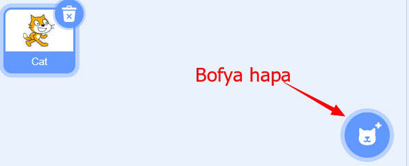
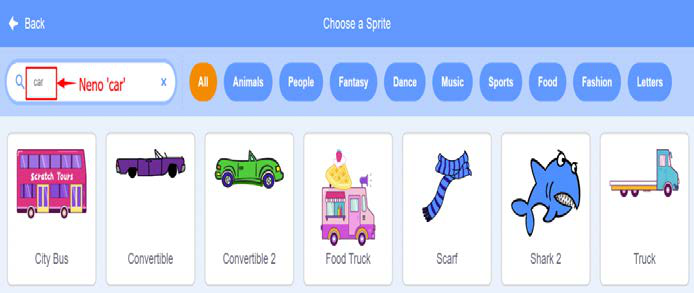

Kazi ya kufanya namba 16: Kuunda mchezo wa kumfanya ‘Sprite’ (City Bus) iende uelekeo tofauti tofauti
Hatua zifuatazo zitakuongoza kuunda mchezo wa kuifanya ‘City Bus’ iende upande tofauti tofauti.
1.Chagua ‘Sprite’ kwa kubofya aikoni ya ‘Sprite’ kama inavyoonekana katika Kielelezo namba 53.

Kielelezo namba 53: Kubadilisha ‘Sprite’
2.Tafuta ‘Sprite’ kwa kuandika neno ‘car’ kama inavyoonekana katika kielelezo namba 54.
3.Kisha chagua ‘Sprite’, kwa mfano chagua ‘City Bus’ kwa kubofya kwenye ‘Sprite’ huyo.

Kielelezo namba 54: Kutafuta na kuchagua ‘Sprite’
4.Utapata Sprite wawili kama inavyoonekana katika Kielelezo namba 55.